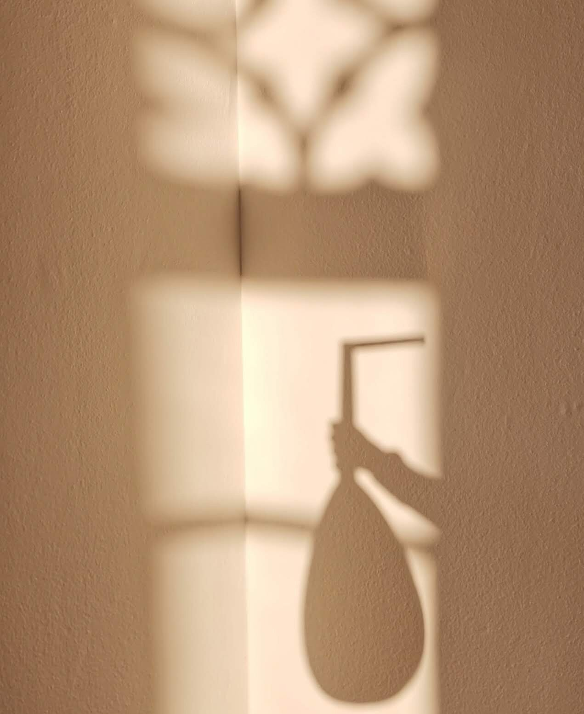

Prossime date & archivio concerti
Calendario
Nessun concerto in programma al momento. Torna presto!
Dove
Archivio
Linea del tempo
← scorri · rotella del mouse per zoomare del mouse per zoomare · passa il mouse su un punto
scorri orizzontalmente · pizzica per zoomare · tocca un punto per i dettagli
Contattami
saramariafantini[at]gmail[punto]com
© 2025 Sara Maria Fantini. Tutti i diritti riservati.
